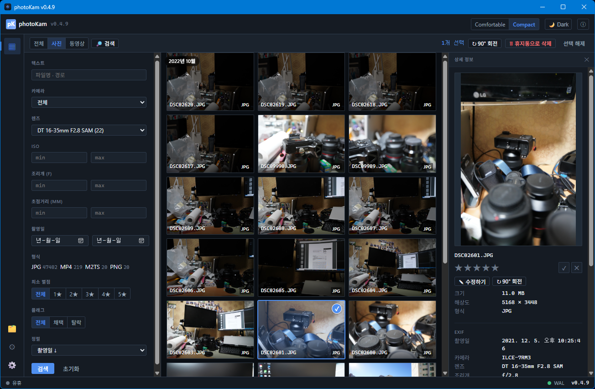
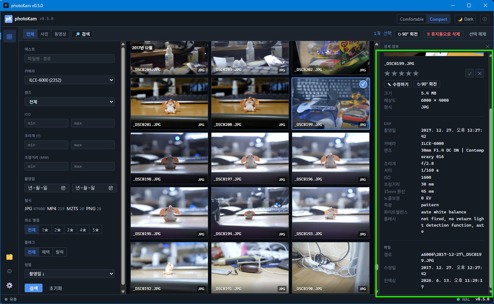
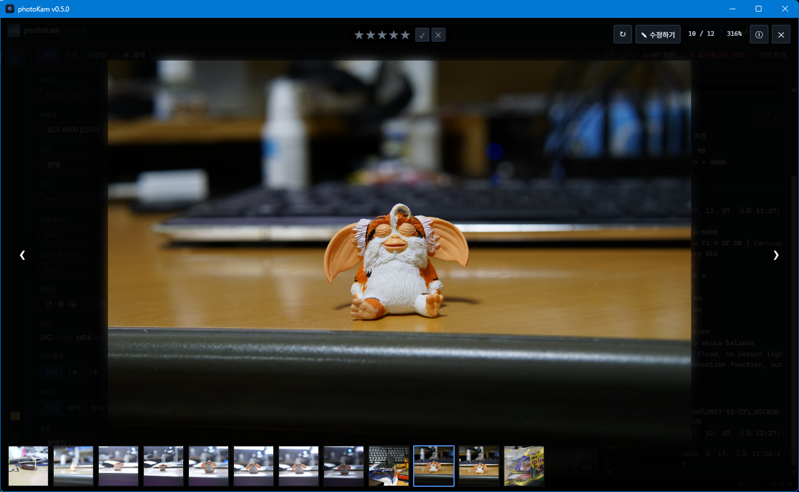
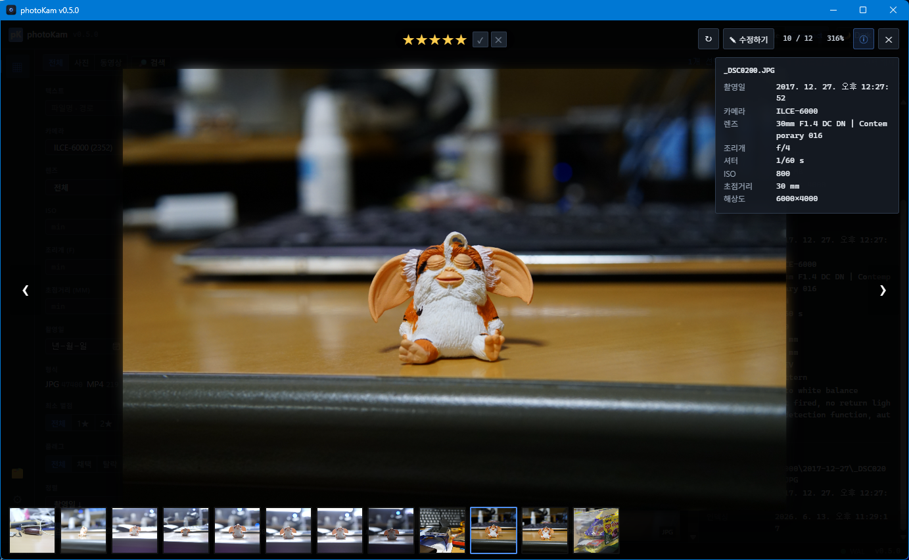
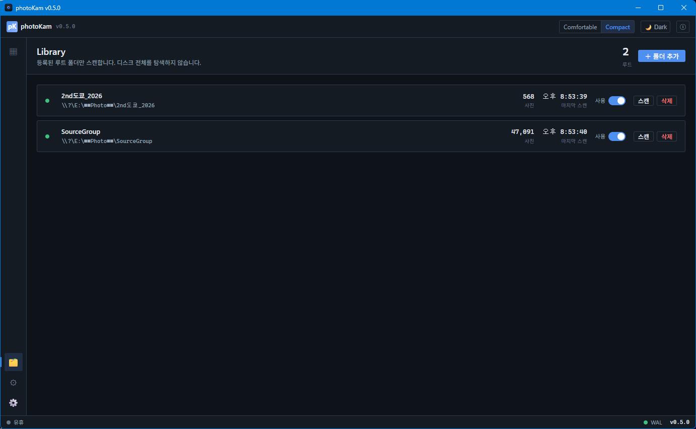
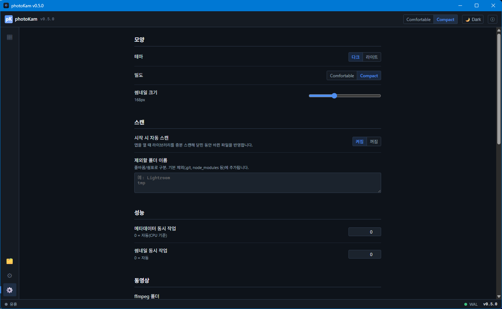

내 PC의 사진·동영상을
빠르게 찾고, 정리하고, 본다
digiKam에서 영감을 받은 로컬 인덱서. 수십만 장도 매끄러운 가상 스크롤로 훑고, EXIF 검색·별점·플래그로 고르고, 외부 편집기로 바로 보정합니다. 모든 데이터는 내 컴퓨터에만 저장돼요.

주요 기능
대용량 가상 스크롤
수십만 장도 메모리 걱정 없이. 보이는 범위만 로드하고 멀어지면 해제합니다.
EXIF 검색
카메라·렌즈·ISO·조리개·초점거리·촬영일·형식으로 조건 검색. 갤러리에서 바로 토글.
별점 · 플래그
1~5 별점과 채택/탈락 플래그로 빠르게 고르기. 단축키와 일괄 적용 지원.
타임라인
날짜순 정렬 시 스크롤 위치의 촬영월을 떠다니는 라벨로 표시.
동영상 재생
자체 플레이어. m2ts 등 비호환 포맷은 자동으로 mp4 변환 후 재생.
빠른 크게 보기
이웃 사진 미리 로드로 즉시 넘김. 휠 줌·드래그 팬·EXIF 오버레이.
외부 편집기 연동
"수정하기"로 포토샵·영상툴 등 지정 프로그램에서 원본을 바로 엽니다.
다중 폴더 라이브러리
여러 폴더를 모아 한 화면에. 시작 시 자동 증분 스캔으로 변경분 반영.
완전 로컬
인덱스는 로컬 SQLite. 외부 서버·전송 없음. 삭제는 휴지통으로 안전하게.
화면
아래 이미지는 자리표시입니다. site/images/ 폴더에 같은 이름으로 캡처를 넣으면 자동 표시됩니다.





사용 방법
- 설치 & 실행아래에서 설치본을 받아 설치하고 photoKam을 실행합니다.
- 폴더 추가좌측 하단 라이브러리에서 사진/동영상이 있는 폴더를 추가합니다.
- 스캔스캔을 누르면 백그라운드에서 인덱싱·썸네일 생성. 이후엔 시작 시 자동 증분 스캔.
- 둘러보기 & 검색갤러리에서 스크롤로 탐색하고, 상단 🔎 검색으로 조건 필터링.
- 고르기사진 선택 후 1~5 별점, P 채택 / X 탈락. 더블클릭으로 크게 보기.
- 편집·정리크게 보기에서 수정하기로 외부 편집기 실행, ↻ 회전, Delete로 휴지통 삭제.
단축키: ←/→ 이전·다음 · 0 줌 초기화 · i 정보 · Esc 닫기
다운로드
Windows 10/11 (64-bit)
photoKam 설치본 받기 (.exe)
※ 다운로드 링크는 배포 후 연결됩니다. (GitHub Releases 권장)
동영상 기능을 쓰려면 ffmpeg가 필요합니다 — 설정에서 ffmpeg 폴더를 지정하거나 시스템 PATH에 두세요.
변경 이력
전체 이력은 CHANGELOG.md에서 관리합니다.
- v0.6.x — 사진 비교(2~4장 동기 줌), 카메라/렌즈 다중선택, 카메라 컬러 라벨, 타임라인 날짜 범위
- v0.5.x — FFmpeg 동봉, 이용약관·소개, 상세 패널 정리
- v0.4.x — 별점·플래그, 타임라인, 낙관적 삭제, m2ts 변환 재생, 크게 보기 프리로드
- v0.3.x — 갤러리·검색 통합, 시작 시 자동 스캔, UI 정리
- v0.2.x — 무한 스크롤, 회전, 외부 편집기 연동, 자체 동영상 플레이어